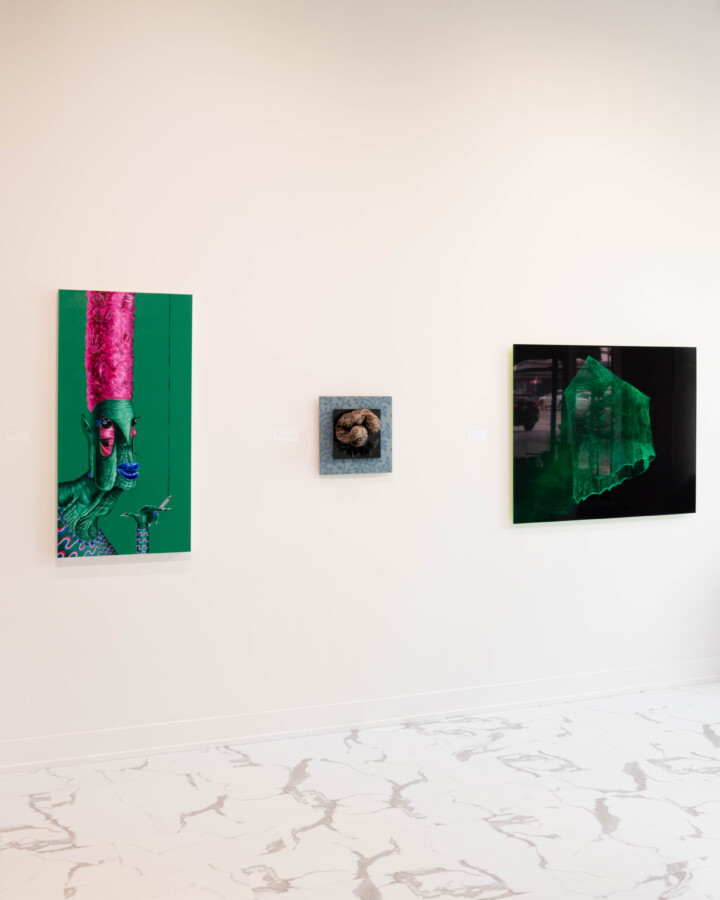

Not Normal: Challenging Societal Norms
An exhibition allowing for many possibilities. “Not normal” refers to anything that goes against established norms, represents an unexpected change, or deviates from accepted collective reality.
Chicago Sculpture International Group Juried Show for CSI Artists
Featured Artists:
Jonathan Antos • Ruby Barnes • Sharon Bladholm • Donna Bliss • Margie Criner • Gary Cudworth • Jason Ferguson • Gertah • Bert Gilbert • Jill King • John Kurman • Erin LaRocque • Gina Lee Robbins • Micki LeMieux • Ellen Lustig • Russ Marr • Bobbi Meier • Jerry Monteith • Scott Mossman • Thomas Plum • Howard Russo • Dominic Sansone • Samuel Schwindt • Simone Scigousky • Marvin Shafer • Eleanor Spiess-Ferris • Rich Stewart • Yi Sun • Sishi Wang • Bruce Webber • Connor Young